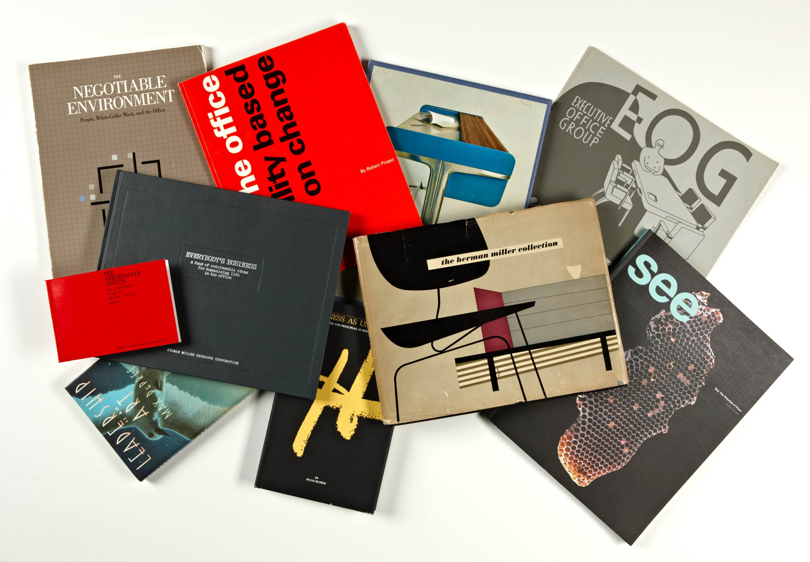
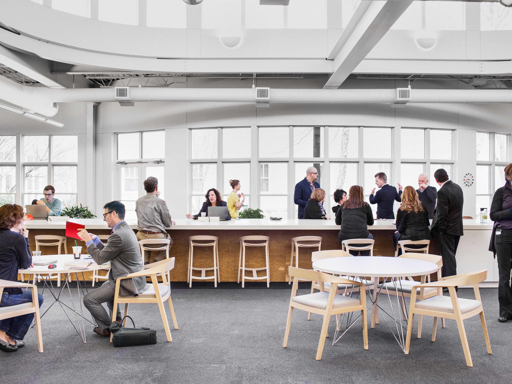

DESIGN IDEAS
Inspiration for Communal Workplaces
DESIGN IDEAS
Inspiration for Communal Workplaces
 INDUSTRY NEWS
The Debut of our Newest Crate Collection
INDUSTRY NEWS
The Debut of our Newest Crate Collection
 MK WORLD
A Look Back at Some of our Favorite Knoll Textiles
MK WORLD
A Look Back at Some of our Favorite Knoll Textiles

A Dive Into the Herman Miller Archive
col-12

Back to the Office: 10 Ideas for a New Workplace
Experts in the fields of pyschology, architecture, engineering, management, and human resources provide their take on what we can improve and change to make the in-person work experience better than ever